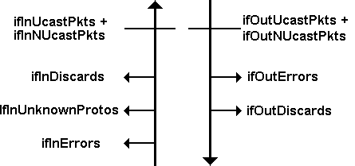

The Interfaces Group (1.3.6.1.2.1.2)
The
MIB-II
interfaces
subtree
contains a table with an entry for each system
interface. Notice that each interface has his own
MIB
group under the
transmission node (1.3.6.1.2.1.10) and include more specific information than
the interfaces group.
The total number of network interfaces is shown in the ifNumber variable of the
interfaces group. This group deals with features that are common across
technologies, such as operational status of an interface or a count of the
number of received octets.
This group then contains variables with information about :
-
the type of technology for an interface
-
the estimate of current bandwidth (in bits/s)
-
the interface state
-
statistics about incoming and outgoing traffic
-
error counters
-
an OBJECT IDENTIFIER that point to a MIB subtree that defines additional
variables for this type of interface
The
Case diagram
below shows the incoming and outgoing traffic
flow. The traffic flow is quite simple.
Frames
are counted as they arrive from
the network. Some are discarded during error screening, and the rest are
delivered to an appropriate protocol.

Case diagram showing packet flows
Notice that an extension of the interfaces group : the ifExtension group
(1.3.6.1.2.1.12) was proposed in RFC 1229. It contains variables for the
broadcast and multicast traffic. These included :
The Generic Interface Extension
Table
. Additional general interface variables
about multicast and broadcast traffic.
The Generic Interface Test Table. Variables that can launch a test, and
variables that contain the results of the most recent test.
The Generic Receive Address table. For each interface, a list of all of the
addresses for which the
interface
will accept traffic.
Version 2 Improvements
With
SNMP V2
, there are some improvements that were proposed in
RFC
1573. The
update
MIB
is made up of five tables :
-
The original
MIB-II
interface table switched to deprecated status.
-
An improved version of the interfaces extensions table.
-
A stack table that describes the relationships between interface sublayers.
-
The generic interfaces test table, improved and updated with SNMP V2 features.
-
A slightly modified receive address table, listing the media addresses for an
interface.